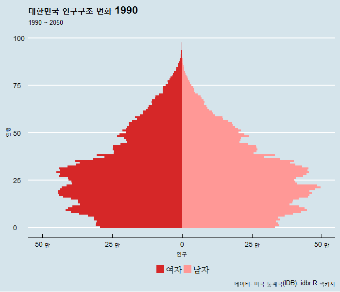

데이터 과학자와 함께 하는 제19대 대통령 선거
대한민국 인구 피라미드
1. 인구 피라미드 1
1990년도부터 2050년까지 대한민국 인구구조 변화를 미국 통계국 데이터베이스(IDB)를 활용하여 인구 피라미드 구조 변화를 통해 시각적으로 이해한다.
1.1. 국가코드 확인
IDB를 팩키지화하여 데이터 추출작업을 편리하게 만든 것이 idbr 팩키지다. 대한민국을 찾아 뽑아내야 하기 때문에 가장 먼저 국가코드를 확인한다. countrycode() 함수를 활용하여 대한민국 국가코드는 “KS” 임이 확인된다.
library(idbr) #install.packages('idbr')
library(countrycode)
countrycode('Korea', 'country.name', 'fips104')[1] "KS"
1.2. 데이터 가져오기
API를 통한 인증방식을 통해 데이터를 열어주고 있기 때문에 미국 통계국 인증웹페이지 http://api.census.gov/data/key_signup.html 에서 전자우편을 통해 API키를 발급받는다. idb1() 함수 국가코드, 기간, 인증키를 설정하면 데이터를 쭉 불러와서 데이터프레임으로 정리한다.
library(tidyverse)
library(idbr) # devtools::install_github('walkerke/idbr')
library(ggplot2)
library(animation)
library(dplyr)
library(ggthemes)
library(extrafont)
loadfonts()
idb_api_key("7aexxxxxxxxxxxxxxxxxxxxxxxxxxxxxxxx")
male <- idb1('KS', 1990:2050, sex = 'male') %>%
mutate(SEX = 'Male')
female <- idb1('KS', 1990:2050, sex = 'female') %>%
mutate(POP = POP * -1,
SEX = 'Female')
korea <- bind_rows(male, female) %>%
mutate(abs_pop = abs(POP))
korea <- korea %>% mutate(SEX = ifelse(SEX == "Male", "남자", "여자"))1.3. 인구 피라미드 애니메이션
1990년부터 2050년까지 각 연도별 ggplot을 활용하여 인구 피라미드를 생성하고 나서 이를 gif 파일로 변환시키면 인구 피라미드 애니메이션이 완성된다.
saveGIF({
for (i in 1990:2050) {
title <- as.character(i)
year_data <- dplyr::filter(korea, time == i)
g1 <- ggplot(year_data, aes(x = AGE, y = POP, fill = SEX, width = 1)) +
coord_fixed() +
coord_flip() +
geom_bar(data = subset(year_data, SEX == "남자"), stat = "identity") +
geom_bar(data = subset(year_data, SEX == "여자"), stat = "identity") +
scale_y_continuous(breaks = seq(-500000, 500000, 250000),
labels = c('50 만', '25 만', '0', '25 만', '50 만'),
limits = c(min(korea$POP)-50000, max(korea$POP))) +
theme_economist(base_size = 14) +
scale_fill_manual(values = c('#ff9896', '#d62728')) +
labs(
title = paste0("대한민국 인구구조 변화 ", title),
subtitle = "1990 ~ 2050",
caption = "데이터: 미국 통계국(IDB): idbr R 팩키지",
x = "연령",
y = "인구"
) +
# theme_minimal(base_family="NanumMyeongjo") +
theme(legend.position = "bottom", legend.title = element_blank(),
legend.text=element_text(family="NanumMyeongjo")) +
guides(fill = guide_legend(reverse = TRUE))
print(g1)
}
}, movie.name = 'korea_pyramid.gif', interval = 0.3, ani.width = 700, ani.height = 600)
2. 대선이 있던 년도별 인구구조 변화
2.1. 최근 6번 대선 인구구조 변화
1992년 ~ 2017년 대선 년도별 인구구조 변화를 시각화하면 다음과 같다. ggplot 짝꿍 gridExtra 팩키지를 활용하여 grid.arrange() 함수를 활용하여 시각화하면 다음과 같다.
# library(gridExtra)
korea <- read_csv("data/korea_pop_idb.csv")
korea <- korea %>% mutate(SEX = ifelse(SEX == "Male", "남자", "여자"))
vis_election <- function(df, title) {
g1 <- ggplot(df, aes(x = AGE, y = POP, fill = SEX, width = 1)) +
coord_fixed() + coord_flip() +
geom_bar(data = subset(df, SEX == "남자"), stat = "identity") +
geom_bar(data = subset(df, SEX == "여자"), stat = "identity") +
geom_vline(xintercept = 18, color="darkblue") +
scale_y_continuous(breaks = seq(-500000, 500000, 250000),
labels = c('50 만', '25 만', '0', '25 만', '50 만'),
limits = c(min(korea$POP)-50000, max(korea$POP))) +
theme_economist(base_size = 14, base_family="NanumMyeongjo") +
scale_fill_manual(values = c('#ff9896', '#d62728')) +
labs(
title = paste0(title, " 인구구조"),
x = "연령",
y = ""
) + guides(fill=FALSE)
}
election_year <- c(1992, 1997, 2002, 2007, 2012, 2017)
for(i in seq_along(election_year)) {
df <- korea %>% dplyr::filter(time == election_year[i])
p_name <- paste0("p", election_year[i])
assign(p_name, vis_election(df, election_year[i]))
}
grid.arrange(p1992, p1997, p2002, p2007, p2012, p2017, nrow=2, ncol=3)
2.2. 1990년 대선과 2017년 대선 인구구조 비교
grid.arrange(p2012, p2017, ncol=2)
2.3. 2012년 대선과 2017년 대선 인구구조 비교
grid.arrange(p1992, p2017, ncol=2)